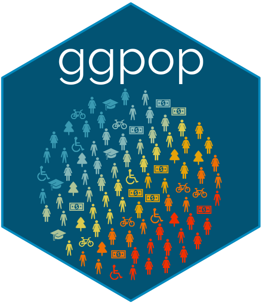
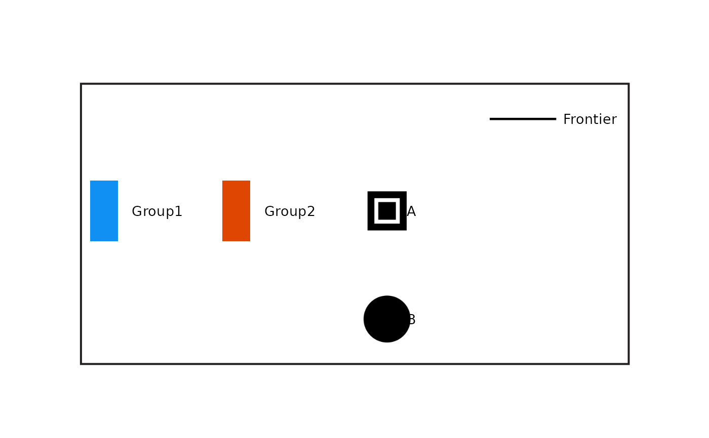

Specify a composite legend with external colour keys
Source:R/legend-spec.R
legend_spec.RdStores icon-grid rows, named colour keys, and typed symbol rows as content.
legend_render() lays out the content and fits its border at the requested
physical size. The specification can later be reused for related legends.
Usage
legend_spec(
grid,
keys = NULL,
symbols = NULL,
key_columns = 1L,
grid_title = NULL,
group_title = NULL,
symbol_title = NULL,
group_key_width = 0.2375,
group_label_gap = 0.1187,
group_gap = 0.591,
key_column_gap = 0.317,
group_title_nudge = 0,
swatch_height = 0.56,
xlim = NULL,
label_size = 3.634,
label_fontface = "plain",
marker_size = 3.717,
dpi = 120,
ratios = legend_ratios(),
border = "#231F20",
border_padding = c(0.018, 0.09)
)Arguments
- grid
A data frame from
icon_grid().- keys
Named character vector of colour values. Names are key labels.
- symbols
Named character vector of
"line","point","swatch", or"text"types, or a data frame accepted bykey_legend(). A text row has a label but no visible key.- key_columns
Number of colour-key columns, filled from top to bottom.
- grid_title, group_title
Optional titles for the icon grid and colour keys.
- symbol_title
Optional title for the symbol column. With no title the first symbol row sits on the title line, so it doubles as the column heading. With a title, the heading takes that line and the symbols start on the same rows as the icon grid and colour keys.
- group_key_width, group_label_gap, swatch_height
Dimensions of the external colour keys in grid coordinates.
swatch_heightis a fraction of one row.- group_gap
Gap from the rightmost colour-key label to the icon grid.
- key_column_gap
Gap between colour-key columns.
- group_title_nudge
Horizontal adjustment to the centred group title.
- xlim
Optional fixed horizontal canvas limits.
NULLcentres the measured content automatically.- label_size
Text size in millimetres.
- label_fontface
Font face for every title and label:
"plain","bold","italic", or"bold.italic".- marker_size
Icon size passed to
geom_icon_point().- dpi
Icon rendering resolution.
- ratios
Layout proportions from
legend_ratios().- border, border_padding
Border colour and padding passed to
legend_box(). Useborder = NAto omit the border.
Value
A ggpop_legend_spec object to pass to legend_render().
Examples
grid <- data.frame(
row = c(1, 2), col = c(1, 1),
icon = c("square-inset", "circle-solid"),
label = c("A", "B")
)
spec <- legend_spec(grid, keys = c(Group1 = "#1090F3", Group2 = "#DF4601"),
symbols = c(Frontier = "line"), key_columns = 2)
legend_render(spec, width = 7, height = 1.5)
